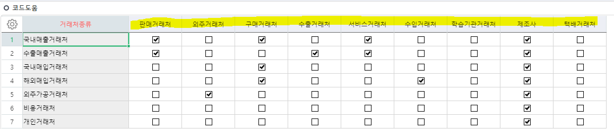
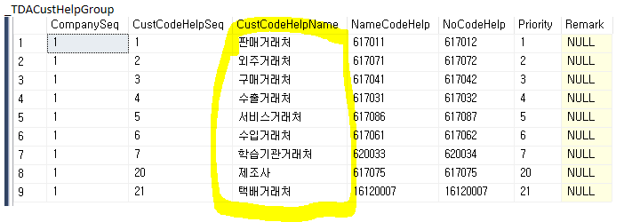

추가정보정의 / 코드도움설정

거래처종류등록 및 코드도움설정
사용자정의코드 패치
(시군, 시면)
=> 1번에서 테스트 하기전에 데이터 없는 상태로 실서버에 먼저 패치
그 후에 TEST 소분류 넣어서 TEST
===========================================================================
추가정보정의 테이블 INSERT
INSERT INTO _TCOMUserDefine
SELECT '1','_TDACust','2004','1000004','시면','0','19999','2140133','1027003','','4','0','','0','27292','2022-06-21 13:42:09.603','0','0' UNION
SELECT '1','_TDACust','2004','1000005','OB팀','0','0','','1027006','','5','0','','0','27292','2022-06-21 13:42:09.603','0','0' UNION
SELECT '1','_TDACust','2004','1000006','스타파트너','0','0','','1027006','','6','0','','0','27292','2022-06-21 13:42:09.603','0','0' UNION
SELECT '1','_TDACust','2004','1000007','수요자코드','0','0','','1027006','','7','0','','0','27292','2022-06-21 13:42:09.603','0','0' UNION
SELECT '1','_TDACust','2004','1000008','환코드','0','0','','1027001','','8','0','','0','27292','2022-06-21 13:42:09.603','0','0'
=> 실서버 ERP 추가정보정의에서 해도 되지만 그러면 Serl이 안 맞기 때문에
직접 DB에서 INSERT 해주는 방식으로 해야한다
===========================================================================
_TDACustHelpGroup

===========================================================================
===========================================================================
SELECT * FROM _TDACustClass WHERE UMajorCustClass = 8001 -- 기타정보
select * FROM _TCOMUserdefine where tablename = '_TDACust' -- 모든 추가정보정의 테이블
select * FROM _TDACustUserDefine WHERE MngSerl = 8001 -- 거래처 추가정보정의 테이블
SELECT *FROM _TCOMUserDefine
WHERE TableName = '_tdaumAJOR' AND DefineUnitSeq = 8004